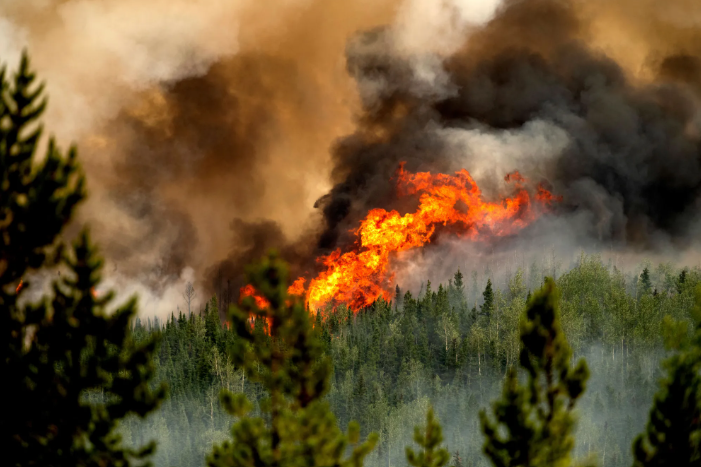
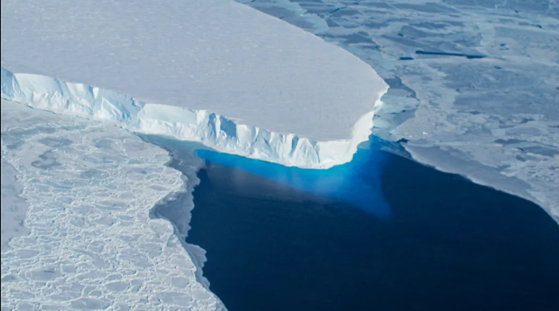

Ready to understand and reduce your carbon footprint?
Every daily choice affects your environmental impact.
Track your habits, understand your footprint, and build sustainable routines.
Log your travel, food, and energy habits daily.
Instantly calculate your exact dynamic carbon impact.
Build a consistent green streak for a healthier planet.
Every daily task requires energy. That energy leaves a structural residue called a Carbon Footprint. When millions of individual footprints combine, they compound into massive carbon emission clouds that trap solar heat, melting our ice caps, destabilizing our weather patterns, and forcing our planet's ecosystems into an active survival crisis.
Every time an internal combustion engine fires up, it converts refined petroleum into a dangerous mix of carbon dioxide, nitrous oxide, and airborne particulate matter. This constant atmospheric dumping forms a thick blanket around the globe, rapidly accelerating climate change.

Leaving appliances on standby mode, running high-wattage servers, and using inefficient cooling networks create a constant demand for electricity. The vast majority of our global power grids are still fed by burning tons of dirty coal and methane gas every second.
Mass meat production and heavy food processing require immense amounts of resource-heavy supply chains. Industrial livestock farming is a primary source of methane gas—a greenhouse gas that is significantly more effective at trapping heat than carbon dioxide over a 100-year period.

Select a target date to review your carbon history or enter new parameters:
Log your household electricity expenditure estimate for the selected day:
-
0 Days Active
Click a card below to view the calculation methodology.